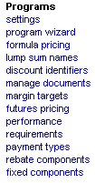

Blacksmith Applications, www.blacksmithapps.com

Where can I find this in FORGESM?URL Properties: settings/contract_settings.cfm?PageTitle=programs: contracts
Use the Program Settings to configure how to associate the contract end date with an expiration notification; to whom you want the nightly program and billback reports emailed; to establish the default unit volume of time, and to set the unit of volume to be used in the program performance indicators.
How Many Weeks Before The Contract End Date Is A Contract Considered Expiring?
Enter the number of weeks before the end date of a contract that you want to receive an expiring notification. For example, if you enter 2, then 2 weeks prior to the end date of a contract, the status of the program will automatically change from Active to expiring. Thus, you will be alerted to the impending end date of the program.
What email addresses should the Nightly Program and Billback report be sent to?
Enter the email addresses to whom you want these reports emailed.
Default Volume Unit of Time
Select the unit of time (weekly, daily, quarterly, etc.) that you want used as the default volume for programs.
Program Performance Indicator Default Volume UOM
Select the appropriate unit of volume indicator for programs (pound, case, etc.)
URL Properties: Program_Wizard/index.cfm
Use the Program Wizard to view, create and delete program templates and components.
The program templates are used to create programs based on the templates, and the programs inherit the permissions of the template.
Program templates types are provided with appropriate characteristics. For example, Off Invoice type program templates, have only the "Off-Invoice" discount option, and are not available from billback functionality. Distributor Trade/Shelter programs create exclusions.
URL Properties: settings/Formula_pricing/index.cfm?PageTitle=programs: formula pricing
Use Formula Pricing to create Pricing Rules that help you make program projections and ascertain the impact of program components. You can create multiple rules, each of which may include multiple commodities to which you assign "weights" in the pricing rule. You control the period of time for which to select data, and you enter the commodity calculation components, amounts and units of measure.
After creating pricing rules, you assign them to programs.
The formula pricing page has three tabs: Pricing Rules (this tab lists existing, active pricing rules), Inactive Rules (this tab lists pricing rules that have been created but are not active) and Add New.
Any existing pricing rules display on the Pricing Rules tab (clicking the Programs link in this listing shows you any programs that are using the pricing rule).
To create a pricing rule, select the Add New tab. The Rule Information page displays.
Enter the Rule Name. Click the [click here to select commodities] link.
Search for and select the commodities appropriate to your pricing (by Exchange Family, such as Beef; then by specific Exchange, such as Chicago Mercantile Exchange; then by Commodity type, which could be 2-year Treasury Note or Feeder Cattle or USDA Variety Beefs, etc.).
From the commodities that display matching your search criteria, select the checkbox of those you want to import for use in your pricing rules, and click the [[import selected commodities] link.
The Rule Information page displays showing your selected commodities. To the left of each selected commodity, a scissors icon allows you to delete any selected commodity. Click [Continue].
The Formula Pricing Step 2 page displays, showing the selected commodities.
Each commodity has a section of the page, where you can select characteristics for it.
Begin by selecting the Period Definition for this commodity using the radio buttons (a period of days, or of weeks).
Next, enter the following:
Enter how many periods you would like to select data for
Select how far back in time the sample window should be
Weight this commodity (0% - 100%) in relation to the others
These selections allow you to incorporate controlled pricing data within your formula pricing rules.
Next, enter the overage information for Compounded Calculations and/or Independent Calculations. Compounded calculations build on the value calculated by the last overage amount, whereas independent calculations do not.
Enter the Component Description (Spoilage, for example); enter a value in the Amount field to apply to the commodity to be lost to the overage; and select whether the value should be a dollar or percentage.
Use the Modifications area to enter overages that pertain to the combined commodity value. The modification is added to the weighted averages of the commodities.
Click [continue] when you have finished entering information for all commodities, and the formula pricing page displays with your new active pricing rule.
See example of formula pricing
URL Properties: settings/lump_sum_names/index.cfm
Use the Lump Sum Names page to enter your preferred term for lump sum (such as Golf Event, Flat Fee, Display), that is awarded provided the end of contract criteria are met. Programs can have more than one lump sump component.
Use the Active tab to display active lump sum names. From this tab you can select the checkbox of a lump sum name to deactivate. Deactivated lump sum names that are not in use can be deleted.
Use the Inactive tab to display lump sum names that have been made inactive. To activate an inactive lump sum name, click the Activate icon.
URL Properties: customer types
Use the Discount Identifiers page to add, edit, delete and change the status of discount identifier codes. Status changes you can make include Activate/DeActivate and changing which discount identifier is used as the default. Discount identifiers may be used to pass program type data to an ERP system.
Discount identifiers that are not in use and are inactive can be deleted.
URL Properties: Common_Files/Documents/Create_Document_Details.cfm?PageTitle=programs: programs
Use the manage documents page to upload and store documents so they will be available to users to attach and incorporate during program management.
There are two parts to managing documents: the document types (for example, Cover Letters vs Price List), and actual documents.
You can create and manage document types and you can upload actual documents and store them using this page.
To create a new Document Type, click the [Update Document Type List] link. The Document Type List Management page displays. Enter the name of the document type: the status defaults to active. Click the [save data] link, and then the [back to manage documents] link.
To actually add a document, use the Add Document section: use the Browse button to locate to the file on disk, and its path is reflected in the Select Upload File field. The document's file name displays in the File Name field but is not editable. Give this document a meaningful title.
By default, the document is private, which means it displays only for the user who uploaded it.
When you click the [save data] link, the file is uploaded and displays in the Stored Documents list on the left.
If you make a document inactive, a [delete data] link displays.
URL Properties: settings/upload_margin_targets/index.cfm?PageTitle=programs: margin targets
Being informed about, and tracking and achieving your margin targets is key to your business; managing your costs, selling prices and margin targets is expedited with the margin targets features. The Margin Targets page allows you to upload and view margin targets for products from spreadsheets, down to the individual item level. You can also view the upload logs and see the reason why a margin target level or item did not upload. The logs give you information such as Invalid Reason, Uploaded By and Uploaded On.
Upload Margin Targets File: Browse to select the file to upload, enter the worksheet name (the default is sheet1) and enter the number of items (rows) that should be found on the uploaded worksheet. When you click [Save], you are prompted that this file will replace any existing file.
Upload Item Margin Targets File: This tab operates like the upload margin target file, but includes additional fields for FOB and delivered item targets:
Default FOB target for new items
Default DEL target for new items
Default FOB Base Price
Default Delivered Base Price
Default FOB Cash Discount
Default Delivered Cash Discount
Default Type for new items (FOB or Delivered)
URL Properties: Futures_Pricing/settings/index.cfm?PageTitle=programs: futures pricing
Use the features in futures pricing to project and plan your probable costs based on historical data feeds and pricing trends.
Settings
Lead time to Start Date - Enter the number of calendar days to use as the number of days before the futures pricing
Restrict 'Lead time to Start Date'
Lead time to Customer deadline email notification
Lead time to Offer good until email notification:
Default Period - Select the default period (Calendar or Fiscal year).
Marketing Users
Procurement Users
Preservation
Status
URL Properties: Program_Wizard/performance_requirements.cfm
Use performance requirements to enter the item(s) for which programs might include performance requirements. This feature lets you manage and track programs that include contingencies based on achieving program performance requirements before being eligible for payment.
For example, a program performance requirement might be inclusion of a brochure, or a menu listing or some other requirement. The requirement must be met in order for program to be approved and paid.
Any Existing Performance Requirements display, and you can add more and control whether they are active or inactive. Active performance requirements will be selectable for inclusion on programs.
settings/payment_type/index.cfm
Payment Types allows you to setup payment types to use with programs. For each payment type you can set it to automatically pay or not.
You can enter new payment types, activate and deactivate them, edit and delete them (if they are not in use). Use the tabs to Add new payment types, display active payment types and display inactive payment types.
URL Properties: settings/rebate_components/index.cfm?PageTitle=programs: Rebate components
The Rebates components section allows you to create rebate components, make business rules and associate them to rebate components, control which profiles can use the rebate component, and so on.
Components: View existing rebate components using the Active and Inactive tabs, create new rebate components using the Add New tab, and create and apply business rules using the business rules tab.
From the rebate component listing, you can select a component's checkbox and then click the link to activate or deactivate it ([activate/deactivate selected]).
Click the [rebate component name] link to display the available rules list for that component. Select a rule to use for it by clicking the radio button, and then click the [apply rule] link.
Click the [Profile Restriction] link next to a rebate component to edit the list of profiles that you want to restrict from using this rebate component. Select the checkbox of the profile you want to keep from using the rebate component and click [save].
To view, edit or delete the individual business rules, click the business rules tab. Next to each rule row is an [edit] link and a [delete] link. Use the [Add New Rule] links to add a new business rule.
For a business rule, you can select the UOM (case, lbs, percent, for example), and enter a cost impact. You can also select a cost impact per UOM.
URL Properties: settings/fixed_components/index.cfm?PageTitle=programs: fixed components
Use fixed components to add fixed FOB and Delivered components for programs.
You can control which components are active and available for program inclusion.
URL Properties: settings/business_segment/index.cfm
Use business segments to create business segments that correspond to your organization's business structure.
You can control whether business segments can be used at all within programs (using enable/disable business segments) and you can add business segments and set them as individually active or inactive.
To add a business segment, use the Active Segments tab and click the [Add] link.
You might use business segments (or class codes or some other identifier) to limit programs to certain business segments or class codes. Users, via their assigned profiles, have access to the programs that are part of the class codes/business segments they belong to. You might also use them to limit the product selection drop downs when users create programs so that they see only the products that are part of the class codes to which they have access.
URL Properties: settings/Customer_Type/customer_type_list.cfm
Customer types, if enabled, lets you set up categories of customer types. If you use customer types, they will display in the settings for user profiles, thus serving as an additional level of access that can be turned on or off for a user profile. Customer Types are fed in from the master data. The master data for Customers must link each customer to a type using the Customer Type ID’s. Administrators can edit the customer type description (not the ID) for reporting, etc. Customer Types can apply to distributor and end-user customers.
Customer types might include Chain, Corporate Group, Buying Group, School, etc.
For example: Assume you have customer types enabled and you use a customer type called "Chain". Also assume you create a user profile for Broker, and you do not select the checkbox for Chain within the Broker user profile. That means when a user who has the broker profile is creating or modifying programs they cannot add Chain customers to the distributor or operator list. Note: The FORGESM rule can be modified to meet your specific business rule.